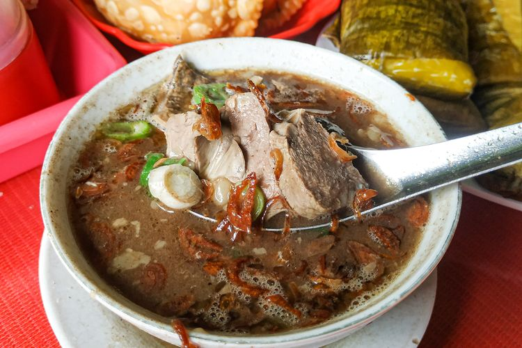

Tentang Saya
Saya Aan Rohmansyah, saat ini saya sedang melanjutkan Pendidikan S1 Informatika di Universitas Siber Asia. Saya berada di kelas IT205. Pada mata kuliah Pemrograman Web I dibimbing oleh dosen Riad Sahara, S.SI., M.T., AAD., CIT., CSCU., OCA., SAP.
Saat ini saya bekerja sebagai Pegawai Negeri Sipil (PNS) yang bekerja di Dinas Pendidikan DKI Jakarta. Saya memiliki tugas mengkoordinasikan program pendidikan di wilayah kerja saya, memastikan pelaksanaan kebijakan pendidikan sesuai dengan regulasi yang berlaku, memonitor dan mengevaluasi kinerja sekolah dan tenaga pendidik dan menyusun rencana pengembangan pendidikan di daerah saya. Saya berkomitmen untuk berkontribusi dalam memajukan dunia pendidikan dan menciptakan generasi muda yang berkualitas.
Pengalaman Kerja
Dinas Pendidikan DKI Jakarta
Mengkoordinasikan program pendidikan di wilayah kerja saya, memastikan pelaksanaan kebijakan pendidikan sesuai dengan regulasi yang berlaku, memonitor dan mengevaluasi kinerja sekolah dan tenaga pendidik dan menyusun rencana pengembangan pendidikan di daerah saya. Saya berkomitmen untuk berkontribusi dalam memajukan dunia pendidikan dan menciptakan generasi muda yang berkualitas.
Teknologi
- Ms Word
- Ms Excel
- Ms Powerpoint
Admin Dinas Pendidikan DKI Jakarta
Mengelola kepegawaian di wilayah kerja saya.
Teknologi
- Ms Word
- Ms Excel
- Ms Powerpoint
Makanan Favorit

|
Rendang |

|
Coto Makassar |
Keahlian
Ms Office
-
Ms Word
-
Ms Excel
-
Ms Powerpoint
Hobi
- Healing
- Mancing
- Traveling
Pendidikan
-
InformatikaUNIVERSITAS SIBER ASIA2023 - Sekarang
Penghargaan
-
Satya Lencana 10 TahunPenghargaan selama 10 tahun dedikasi.
-
Pegawai TeladanPegawai Teladan Dinas Pendidikan DKI Jakarta.
Bahasa
- Indonesia (Mahir)
- Sunda (Mahir)